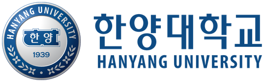
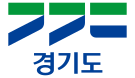
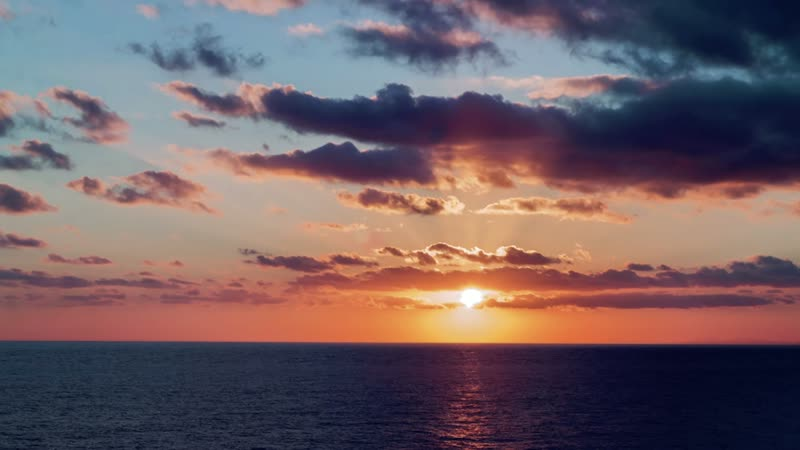
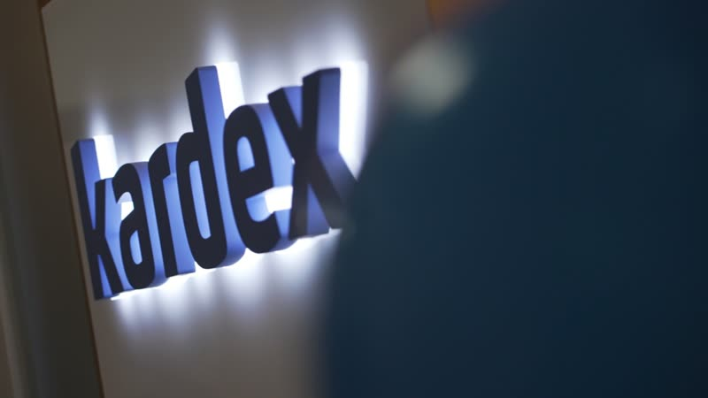
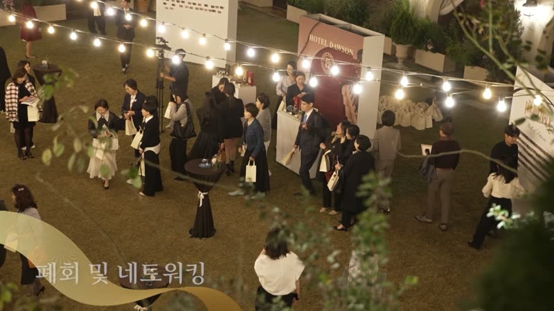
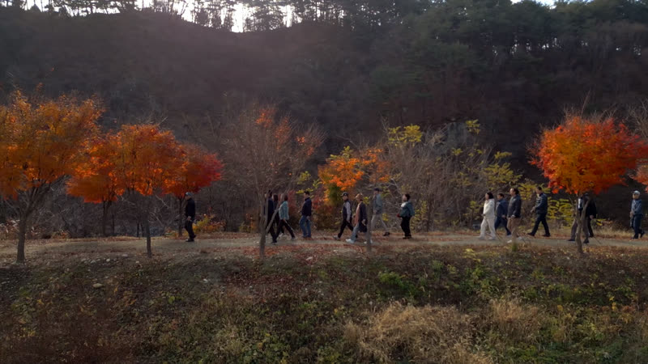

Preview
PreviewNAVIG Corp.Content CompanyStudio · Edutech · Labs · AD · Entertainment
Content, Engineered
기획부터 기술까지,
콘텐츠의 모든 과정을 설계합니다.
From concept to technology,
we engineer every stage of content.
- Projects
- 110+
- Clients
- 20+
- Divisions
- 5
함께한 고객사Selected Clients
- 서울지방변호사 사무직원회
- 카이스트종합학원

- 안산디자인문화고
- 수원여자대학교
- 유한대학교
- SR바이오텍
- 안산시상권활성화재단

- 비스킷인터랙티브

- 더위크앤 리조트
- 좋망골프
- 인제로컬투어사업단
01About
하나의 콘텐츠 회사,
다섯 개의 사업부.
One content company,
five divisions.
나빅(NAVIG)은 영상 제작에서 출발해 교육, 기술, 광고, IP로 확장한 콘텐츠 기업입니다. 대학과 공공기관, 국내외 기업의 콘텐츠를 기획에서 납품까지 하나의 공정으로 설계합니다. NAVIG is a content company that began in film production and has grown into education, technology, advertising and IP. We design content for universities, public institutions and global brands as a single process, from brief to delivery.
- 설립Founded
- 2024
- 사업부Divisions
- 5
- 등록·인증Registrations
- 6
- 2026 정부·기관 선정2026 Selections
- 5
- NAVIG Studio영상 제작. 브랜드 필름, 행사 스케치, 시리즈 콘텐츠, 라이브 스트리밍Film production. Brand films, event films, series, live streaming
- NAVIG EdutechAI 영상 콘텐츠 제작 교육과 민간자격 과정AI video production training and private certification
- NAVIG Labs영상 협업 플랫폼 NAVIG 개발과 운영Builds and runs NAVIG, a video collaboration platform
- NAVIG AD브랜드 디자인, 광고 콘텐츠, 디지털 마케팅 대행Brand design, advertising content, digital marketing
- NAVIG Entertainment오리지널 콘텐츠와 캐릭터 IPOriginal content and character IP
등록·인증Registrations
- 방송영상독립제작사Independent Broadcast Producer문화체육관광부Ministry of Culture
- 비디오물제작업Video Production Business안산시Ansan City
- 산업디자인전문회사Industrial Design Firm한국디자인진흥원KIDP
- 중소기업(소기업) 확인SME Certification중소벤처기업부Ministry of SMEs
- 민간자격 AI영상콘텐츠제작전문가AI Video Content Specialist (Certification)한국직업능력연구원KRIVET
- 상표 등록 5건5 Registered Trademarks특허청KIPO
2026 선정2026 Selections
- 청년큐브 사업화지원Youth Cube Commercialization경기테크노파크Gyeonggi TP
- 글로벌 청년창업 네트워킹 (싱가포르)Global Startup Networking, Singapore경기테크노파크Gyeonggi TP
- 안산 IT·SW기업 판로개척 지원Ansan IT/SW Market Expansion경기테크노파크Gyeonggi TP
- 모두의 창업 1기 선정Startup for All, Cohort 1 (Selected)중소벤처기업부Ministry of SMEs
- 안산시 소상공인 상인대학Ansan Small Business Academy안산시Ansan City
02Work
글로벌 브랜드에서
도시와 대학까지.
From global brands
to cities and campuses.
Preview
Preview Preview
Preview
Preview Preview
Preview Preview
Preview
 Preview
Preview

 Preview
Preview
Preview Preview
Preview Preview
Preview
 Preview
Preview



일부 작업만 공개합니다. 전체 포트폴리오는 요청 시 보내드립니다. Selected work shown. Full portfolio available on request. contact@navigcorp.com
03Services
기획에서 납품까지,
한 팀이 설계합니다.
From brief to delivery,
one team, one process.
- 01
Film & Video영상 제작Production
브랜드·홍보 필름, 모집안내 영상, 행사 스케치, 시리즈 콘텐츠. 기획과 시나리오, 촬영, 편집, 납품까지.Brand films, admissions films, event films and series. Concept, script, shoot, edit, delivery.
- 02
Motion & Design모션그래픽·디자인Visual Design
전시·사이니지 모션그래픽, 로고와 콘텐츠 아이덴티티, 키비주얼.Exhibition and signage motion graphics, logos, content identity and key visuals.
- 03
Live Streaming실시간 중계Broadcast
시상식, 컨퍼런스, 포럼의 실시간 중계와 녹화본 편집.Live streaming for awards, conferences and forums, with post-event edits.
- 04
Digital MarketingNAVIG AD
브랜드 채널 운영, 광고 콘텐츠 기획과 제작, 웹사이트 운영 대행.Brand channel management, ad content, website operations.
- 05
AI EducationNAVIG Edutech
AI 영상·비주얼 콘텐츠 제작 교육, 기관 맞춤 과정, 민간자격 AI영상콘텐츠제작전문가.AI video and visual content training, custom programs for institutions, private certification.
05History
설계의 기록,
나빅의 연혁.
A record of
what we have built.
2026
- 11
민간자격 ‘AI영상콘텐츠제작전문가’ 등록 (한국직업능력연구원, 제2026-008147호)Registered the private certification “AI Video Content Specialist” (KRIVET, No. 2026-008147)
- 11
경기테크노파크 안산 IT·SW기업 판로개척 지원 선정Selected for the Gyeonggi Technopark Ansan IT·SW Market Expansion Program
- 11
디지털 마케팅 사업부 NAVIG AD 출범Launched NAVIG AD, the digital marketing division
- 10
LA LISTE 2027 Korea Awards 공식 제작사 (영상·사진·디자인)Official production partner of LA LISTE 2027 Korea Awards (film, photo, design)
- 10
경기테크노파크 글로벌 청년창업 네트워킹(싱가포르) 선정Selected for the Gyeonggi Technopark Global Startup Networking program in Singapore
- 09
경기테크노파크 청년큐브 사업화지원 선정Selected for the Gyeonggi Technopark Youth Cube Commercialization Support
- 09
캐릭터 IP ‘나빅프렌즈’ 첫 이모티콘 출시Released the first NAVIG Friends character emoticons
- 08
안산시 소상공인 상인대학 선정Selected for the Ansan Small Business Academy
- 06
중소벤처기업부 ‘모두의 창업’ 1기 선정Selected for Cohort 1 of the Ministry of SMEs “Startup for All”
- 04
산업디자인전문회사 신고 (한국디자인진흥원)Registered as an Industrial Design Firm (KIDP)
- 04
원광대학교 개교 80주년 기념영상·TV 광고 제작Produced the 80th anniversary film and TV commercial for Wonkwang University
- 03
비디오물제작업 신고 (안산시)Registered as a video production business (Ansan City)
- 01
방송영상독립제작사 신고 (문화체육관광부)Registered as an independent broadcast producer (Ministry of Culture, Sports and Tourism)
- 01
경기테크노파크 청년큐브 입주Moved into Gyeonggi Technopark Youth Cube
- 01
‘NAVIG’ 상표 등록 (NAVIG·나빅 상표 누적 5건)Registered the “NAVIG” trademark (five NAVIG trademarks in total)
2025
- 11
‘나빅’ 상표 등록Registered the “나빅” trademark
- 11
국방홍보원 KFN PLUS 콘텐츠 편집Edited KFN PLUS content for the Defense Media Agency
- 10
LA LISTE 2026 Korea Awards 행사 영상·실시간 중계Event film and live streaming for LA LISTE 2026 Korea Awards
- 04
교육부 신산업분야 특화 선도전문대학 지원사업 홍보영상 제작 (연성대학교)Produced a Ministry of Education initiative film for Yeonsung University
- 01
더위크앤 리조트 브랜드 필름 제작Produced the brand film for The Week & Resort
2024
- 12
나빅(NAVIG) 설립, 영상 콘텐츠 제작 사업 본격화NAVIG founded; video content production business launched
- 10
‘나빅’ 상표 등록Registered the “나빅” trademark
- 02
‘NAVIG’ 로고 상표 등록Registered the NAVIG logo trademark
06Newsroom
나빅의 관점과
최근 소식.
Perspectives
and company news.
Insights
인사이트Articles07Contact
다음 프로젝트를
함께 설계합니다.
Let's engineer
your next project.
- Platform
- navig.si